Куда сходить
Залезть на Эмпайр Стейт Билдинг
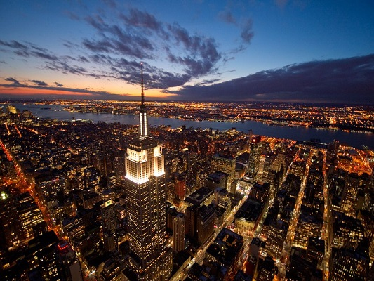Прокатиться на бесплатном пароме на Стейтен Айленд мимо Статуи Свободы
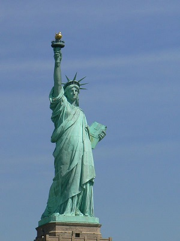Прогуляться по Центральному Парку
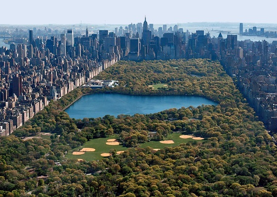Посетить музей Метрополитэн
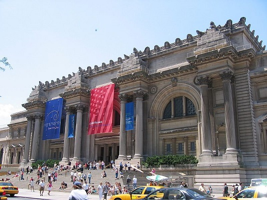Пройтись вечером по Тайм Сквер
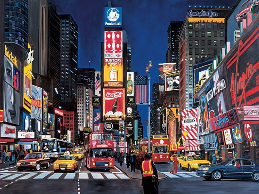Посетить мюзикл на Бродвее
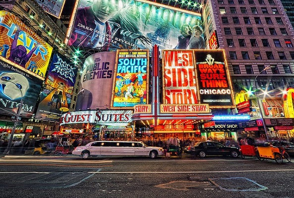Послушать джаз в Сохо
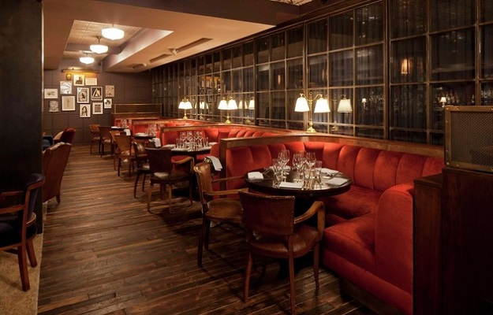Прогуляться по 5-й авеню и Парк-авеню в Мид-тауне
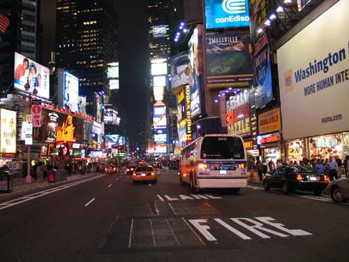Заняться шопингом в стоках Мид-тауна
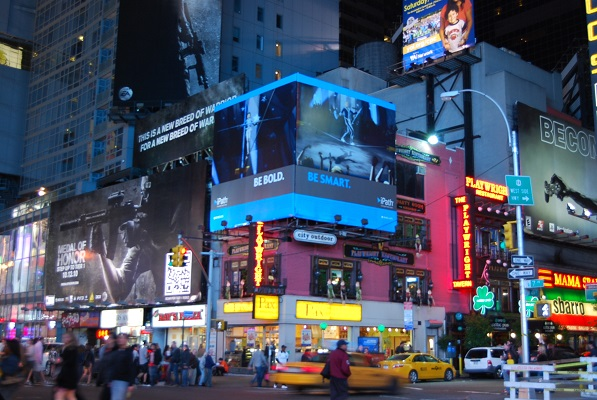Посетить музей Естественной Истории
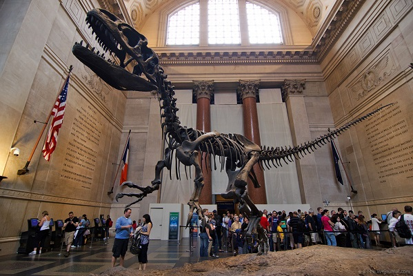Пройтись по Бруклинскому мосту
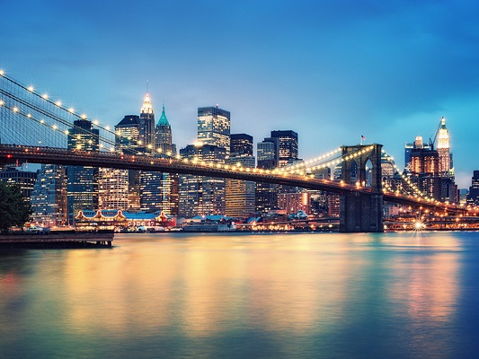Съездить вечером на набережную у Кларк-Стрит
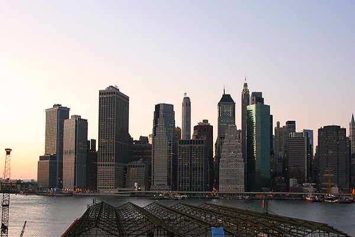Прогуляться в Бэттери-парке
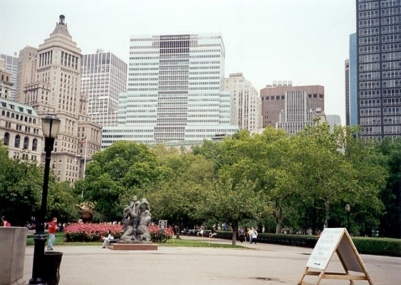Посетить финансовый квартал

Съездить на Брайтон-бич
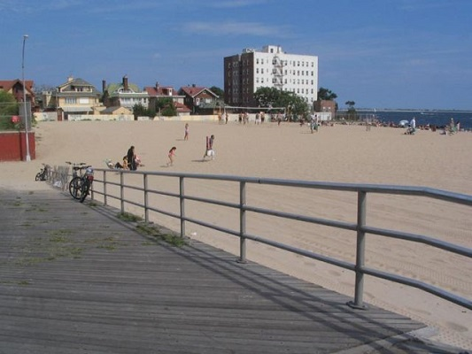Пообедать в Чайна-тауне
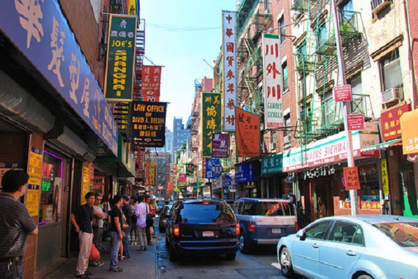Выпить чашечку капучино в "Маленькой Италии
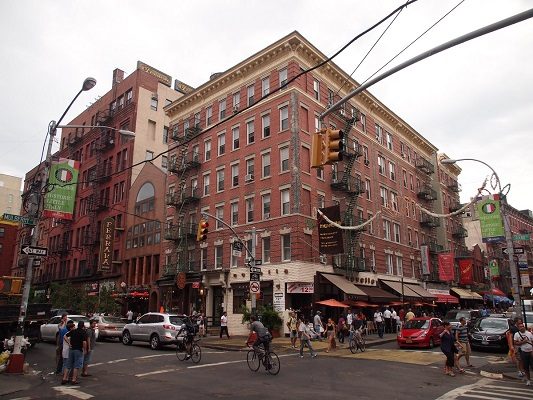Заехать посмотреть Гарлем
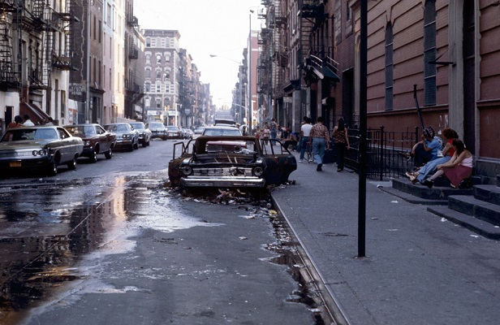Посетить музей Гуггенхайма
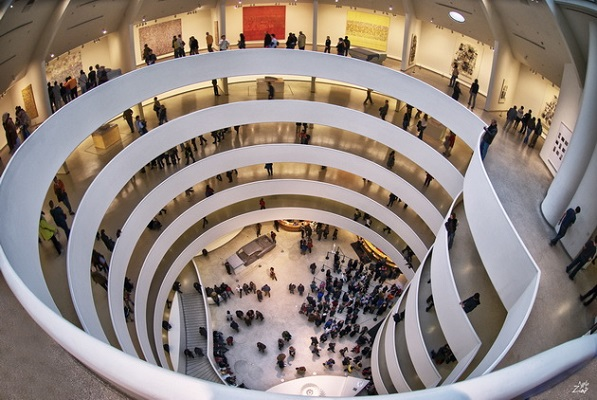